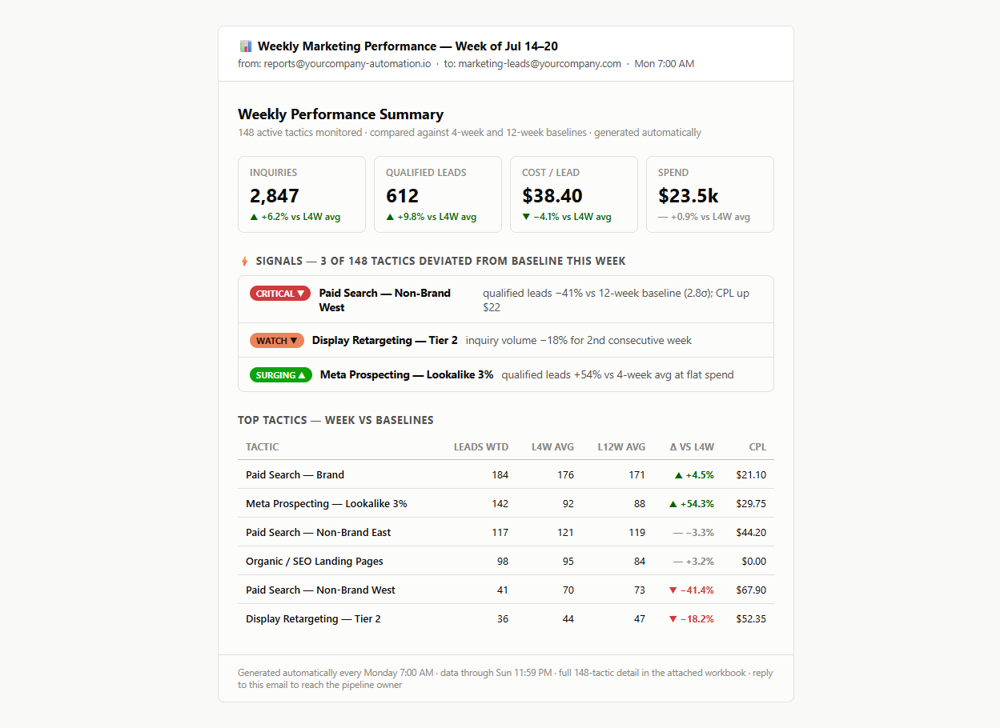
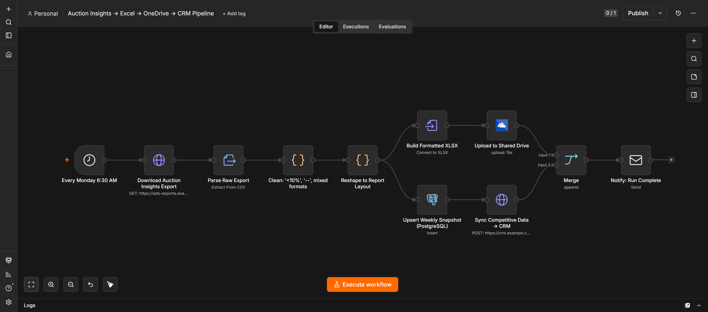
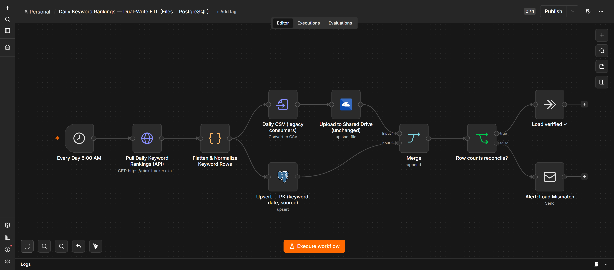

Marketing data pipelines
Attribution, ROAS / CAC-LTV, and automated reporting. I connect your ad platforms, analytics, and CRM into one clean, scheduled pipeline — so the numbers are right and nobody touches a spreadsheet by hand.
AI & Automation Engineer
I build AI-powered automations and data pipelines for marketing & growth teams — attribution and ROAS/CAC reporting, data enrichment, and the n8n / Python workflows that kill the manual reporting grind.
Spent the last few years building marketing-data systems — including at one of the world's largest fintech apps.
Attribution, ROAS / CAC-LTV, and automated reporting. I connect your ad platforms, analytics, and CRM into one clean, scheduled pipeline — so the numbers are right and nobody touches a spreadsheet by hand.
n8n + Python + LLM steps for the work that eats your week: lead and data enrichment, content repurposing, internal tooling, and lightweight agents that actually run on a schedule and don't break quietly.
Scattered data turned into dashboards a growth lead can actually read — with the definitions, freshness, and alerting that make people believe the chart instead of re-pulling it themselves.
Production systems I designed and run — anonymized rebuilds shown (real workflow logic, no client data). Every one is still running unattended today.

4–6 hrs/week → zero
~150 campaign tactics tracked against 4-week and 12-week baselines, with z-score signal detection so stakeholders only get pinged when performance actually deviates. A formatted email lands every Monday at 7:00 AM — nobody touches a spreadsheet.

2–3 hrs/week → zero
Auction Insights exports arrive messy — "< 10%" strings, "--" placeholders, mixed formats. This pipeline cleans them to typed fields, rebuilds the formatted Excel report, uploads to OneDrive, and syncs competitive context into the CRM via PostgreSQL. One trigger, five stages, zero manual steps.

Any question → one SQL query
Migrated file-based data flows to dual-write into PostgreSQL with zero downtime for existing report consumers. Composite keys make re-runs impossible to double-load; row-count reconciliation guards every run; RLS enforces access at the database layer.
Runnable demonstrations — each with the code, an n8n workflow, an architecture diagram, and a short case study on GitHub. Built with synthetic data.
Automated ad + analytics ingestion, normalized into one clean ROAS-by-channel feed — replacing ~10 hrs/week of manual CSV exports.
View on GitHub →Inbound leads enriched by an LLM, scored for fit against an insurtech ICP, and routed back to the CRM — so reps work the best-fit leads first.
View on GitHub →One trusted data model behind CAC / ROAS / LTV — clear definitions and SQL so stakeholders stop arguing about whose number is right.
View on GitHub →$400 · delivered in 5 days
Your team builds the same report by hand every week — exporting, cleaning, formatting, emailing. In five business days it builds itself, on schedule, and you never touch it again.
Need alerting that only pings on real changes, more sources, or a central database? Those are add-ons — ask.
Automate my reportAvailable for freelance projects — marketing-data pipelines and AI automation. The fastest way to reach me: